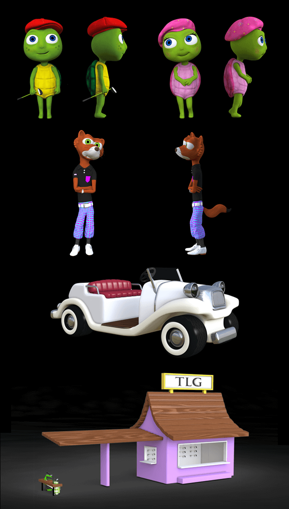

Bunker Blast - Game Art
A contract project for The Littlest Golfer, Bunker Blast incorporates the original characters Sandy, Putter, Steve, and Stinky into a 2D brick-breaker/Peggle style Unity game. I created almost all of the art assets, sprite sheets, and character animation, took care of some level design, and developed the promo materials and logo. The game tours references to world famous courses in its four chapters. Honestly, for a kids game it's quite challenging, and the final level is pretty ridiculous.
Turtle Links 3D Models
Working off of the established illustrations for Sandy and Putter, and developing the look for a new character - Steve the Weasel, I sculpted and painted in Zbrush, retopo'd, and imported, rigged, and shaded in Modo for animation. I also modeled a few props for the show as well as toy designs including a few stylized golf carts, course shop, and more.
Character porportions in the lower age demographic have serious limitations in animation which made for some fun shots, like a turtle adjusting his hat (if their arms were long enough to touch the tops of their heads they would look truly absurd haha).
Graphite Concept Sketches
From tattoo ideas to game concepts, I always enjoy getting ideas out on paper in my sketchbook first. These are a few recent pages.

Crywolf Text Animation
A fun project for a music video of a good friend of mine - Justin Phillips.
Turtle Links Logo
I created the vector logo for "Turtle Links" the 3D pilot for The Littlest Golfer, Inc. I made sure to incorporate the flag & hole as well as a flying ball as images while I kept the typography large, blocky, and fun - perfect for the 4-10 age demographic. It's simple, but I love the vintage yet not dated feel to the entire concept.
3MI Design - Branding
I created the visual style and assets for a media group under which I and two other colleagues were working on various projects. 3MI (in the cyrillic alphabet) in Ukrainian means 'media'. The feel of the website is very unique and fresh and I feel accomplishes the objective of translating the unique variety of services offered. We're all workind on seperate projects/employment but I'm still proud of the work accomplished and the entire visual package.
Don't Dread On Me - Concept Painting
Visual development for a game a friend and I were dreaming up one afternoon. "A runaway dread tries to escape the perils of a a degenerate dead-head's flat, along the way discovering his true potential as he embraces the fetid squalor from which he himself was born..." Or you know, a grungy 2D infinite runner.

Mulligan Illustration
Vector illustration of a character from "Turtle Links", Mulligan - the old, wise scottish terrier.
Live 360 Logo Design
Logo development for a new Broker Agency out of Charleston, South Carolina.
Logo Exercises
Turtle Links Premiere Poster

Promotional poster for the premiere of "Turtle Links" at the PGA Merchandise show in Orlando. From left to right characters Mulligan, Sandy, Putter, Steve, and Stinky pose at their home course in front of the old clubhouse.
Turtle Links
A 3D animated pilot on which I worked for The Littlest Golfer, Inc. From storyboarding to character animation to compositing I in a team of 3 worked to bring Putter, Sandy, Steve, Stinky, and Mulligan to life in a fun and educational golf-centered story. After completion we produced "Bunker Blast" a 2D brick-breaker style Unity game for iOS and Android.

Red Bike - Branding
An exercise in rebranding a bike-delivery sandwich shop at which i worked back in college.
As intended I think it turned out perfectly overly professional for a local deli, and certainly a step up from the original bitmapped Power Point logo.